Electrical engineer, lecturer, and researcher working across power systems and solar energy — and, under the name Yog Manish, a practitioner and storyteller exploring the meditative and the mythic.
A brief overview of the path so far: from classrooms in Kathmandu, through engineering research at IIT Ropar and Pokhara University, to a Sannyas moment that opened a second, quieter body of work in meditation, storytelling, and writing.
A concise account of the complete journey belongs here — the line that runs from an engineering classroom in Kathmandu to a spiritual turning point, and onward into teaching, research, and writing. This is where Manish Karn tells that story in his own words.
Placeholder — awaiting full narrativeA space reserved for a specific milestone, lesson, or reflection drawn from the journey — the kind of detail that doesn't fit a CV but explains everything.
Placeholder — awaiting content"A quote that has guided the path belongs here." — to be supplied
Engineering research, teaching, and technical publications — presented from the most recent work backward.
M.Tech project
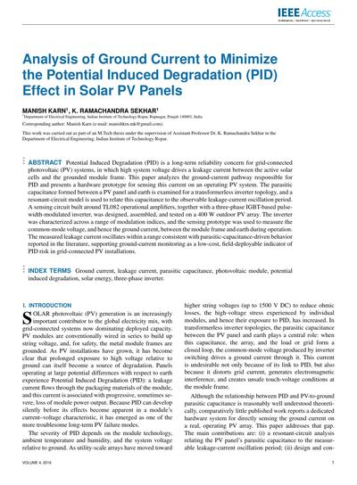
B.E. projects
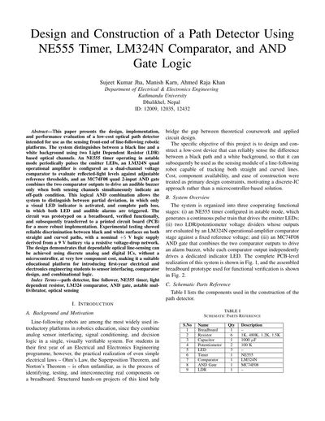
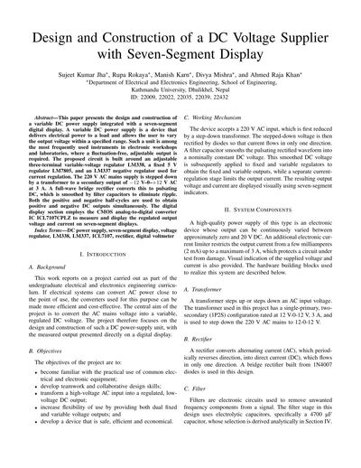
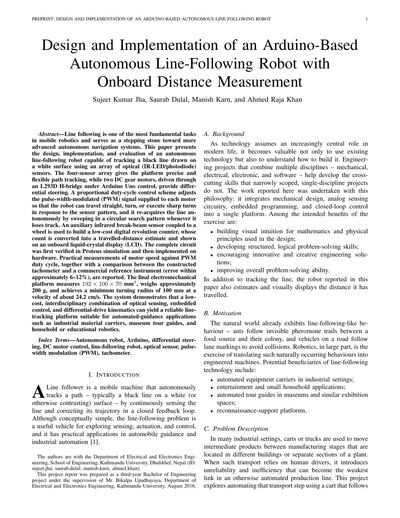
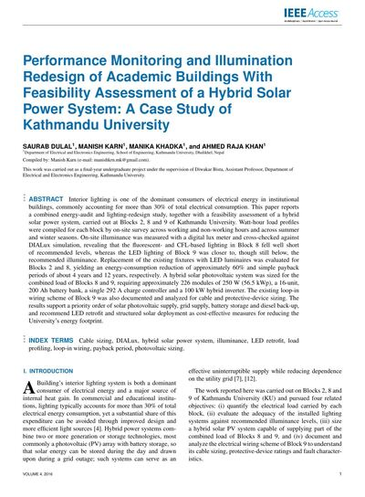
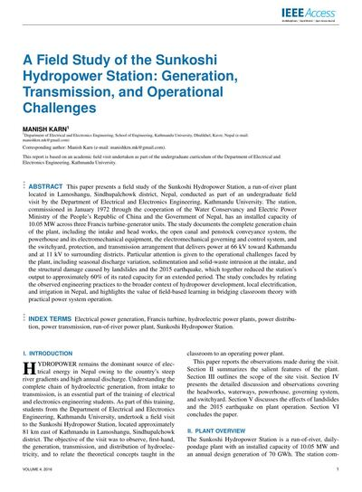
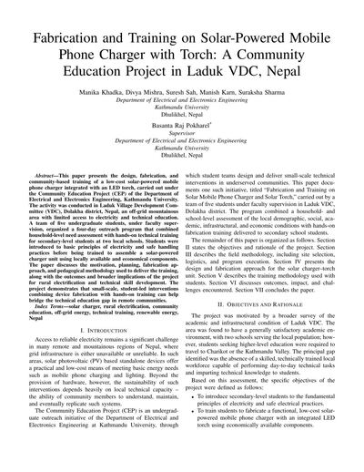
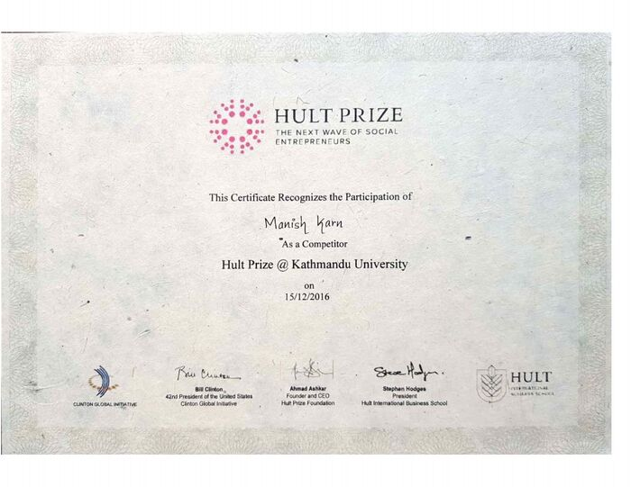
Certificate of participation as a competitor, 15 December 2016.
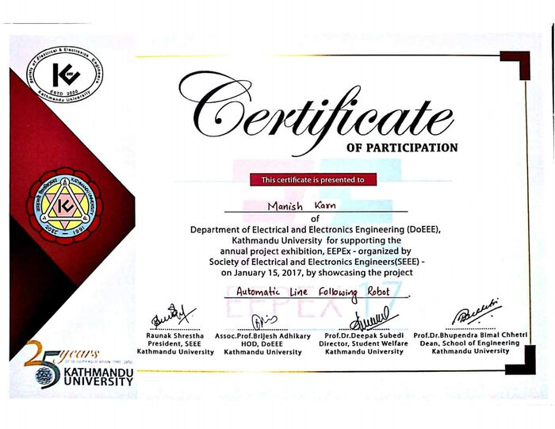
For showcasing the project Automatic Line Following Robot at the annual exhibition organized by SEEE, January 15, 2017.
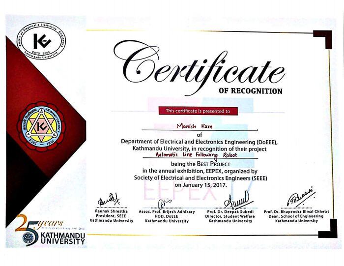
Automatic Line Following Robot named Best Project at the annual exhibition organized by SEEE, January 15, 2017.
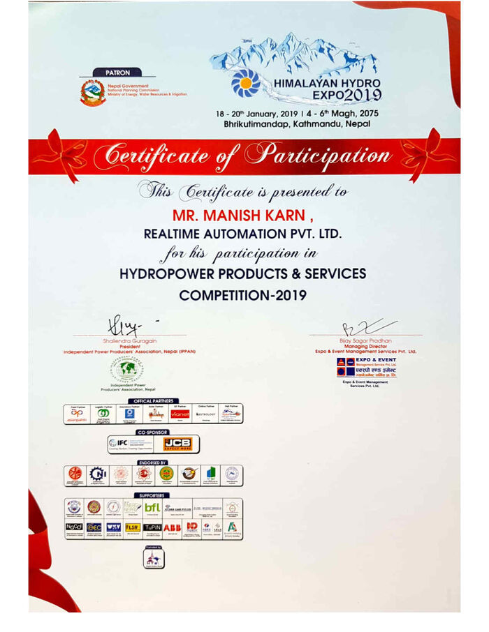
Participation with Realtime Automation Pvt. Ltd. in the Hydropower Products & Services Competition, 18–20 January 2019, Bhrikutimandap, Kathmandu.
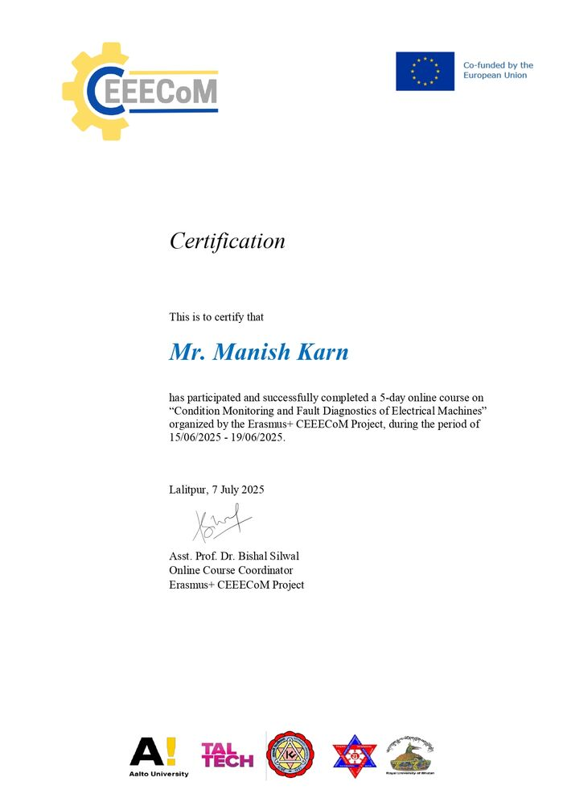
Completed a 5-day online course on Condition Monitoring and Fault Diagnostics of Electrical Machines, 15–19 June 2025.
The spiritual and personal side of the journey, held apart from the academic record.
A description of the moment of Sannyas — what led to it, what it meant, and what it opened — belongs here, in Manish's own words.
Placeholder — awaiting full accountMore gallery entries can be added the same way — description, year, photos
Channels & media — storytelling, meditation, and mystery, carried across platforms.
Short description of Bhavatu Sarvam's content and purpose goes here.
Short description of StoryKahani's content and purpose goes here.
Short description of Mysteries of the Ancient's content and purpose goes here.
A short description of the book's themes and audience goes here.
A short description of the book's themes and audience goes here.
This space is ready for future posts — each with a featured image, title, excerpt, date, category, and a Read more link — as soon as they're written.
A short note explaining the nature and purpose of this website — why it holds both an engineering career and a spiritual and creative practice side by side — goes here.
Placeholder — awaiting visitor note textFormal disclosure text — kept separate from the biography and portfolio content above — goes here.
Placeholder — awaiting disclosure text